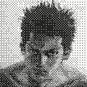
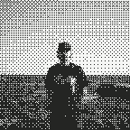
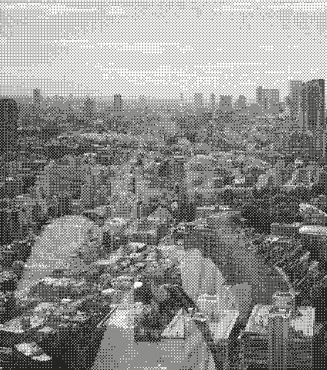
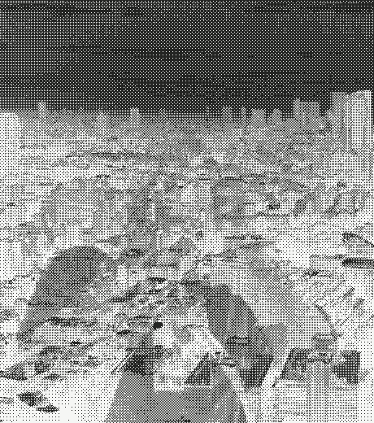

i build systems around what matters to me. minimalism, security and control are my core values. software made by a user, for users. i work mostly at night.
i try to give simple answers to complex problems. i'm passionate about music, drawing, film photography, 3d and art in general.

